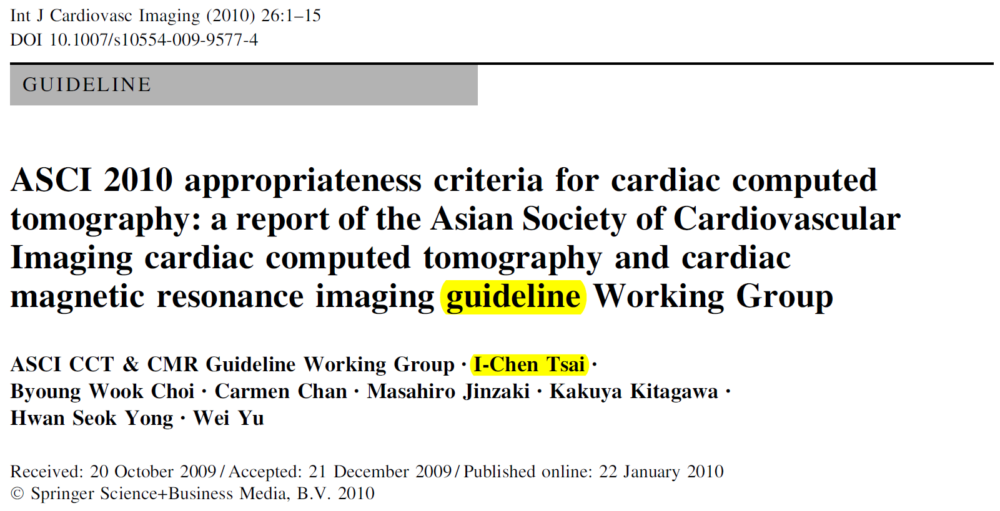
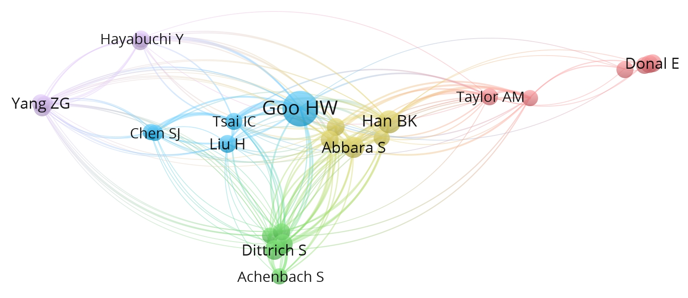
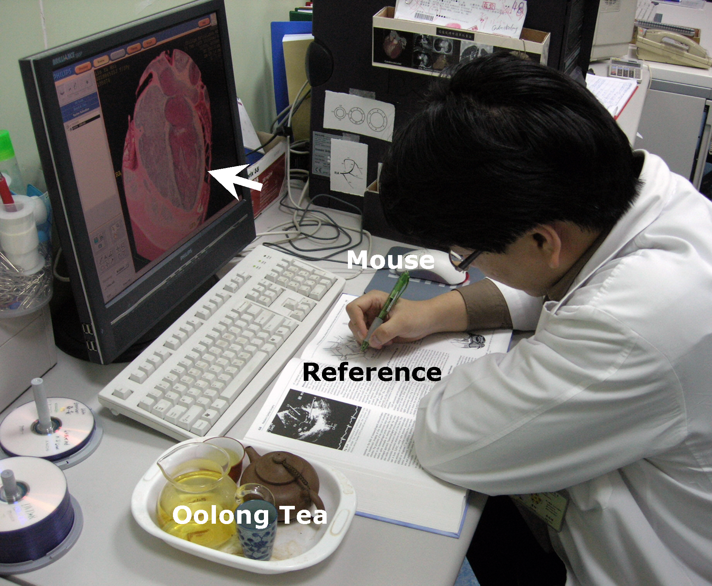
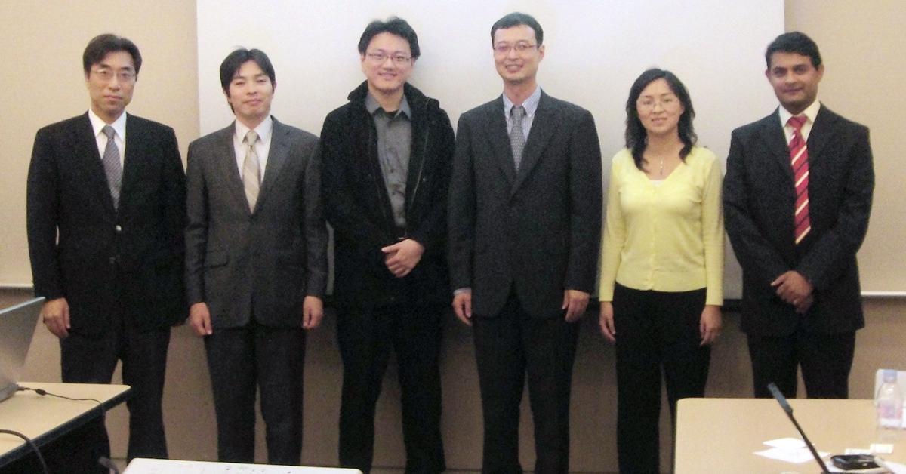
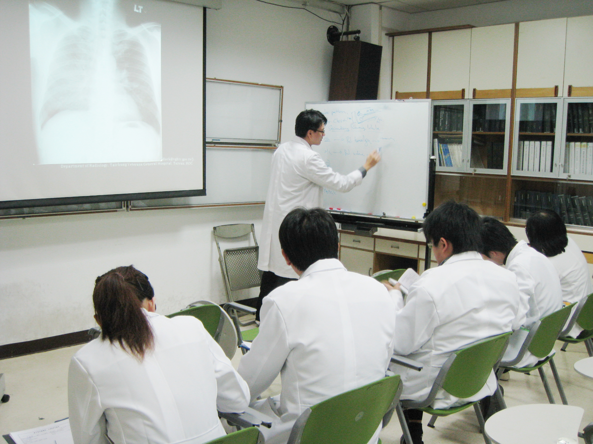
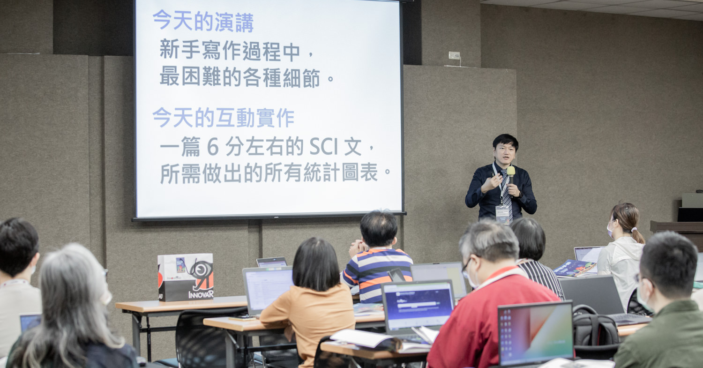

圖、蔡依橙於新思惟國際工作坊演講
李紹榕學長說，我的醫學生涯蠻特別，希望我分享一些對年輕朋友有幫助的內容。認真想了一下，覺得我也只是照著自己想的路去實踐，而新一代又一代的年輕人們，他們的文化背景、社會氛圍、價值觀型塑、資訊取得，都跟我們不一樣，我不太確定是否真能有幫助。
他進一步說，搭建平台、創造價值，在任何時代都是很有意義的。能經營好自己的人生，又讓更多人變好、變成自己想要的樣子，很有啟發性。
於是，我認真思考了一下，自己可以給學弟妹們什麼啟發呢？於是我把這幾年曾經被課程學員、住院醫師、醫學生、網友們問過的問題，整理起來，希望能有幫助。
問：聽說你走的醫學之路不太一樣，是哪邊不一樣？
一開始，我跟多數的醫學生一樣，畢業的時候選了自己喜歡的科，我選放射科。
比較不一樣的是，我在那個網路資源很少的年代，住院醫師就開始 SCI 發表，總醫師期間作出自己多切面電腦斷層的專長，尤其新生兒先天性心臟病、困難心臟術後評估、特殊血管評估領域累積不少發表，也完成新領域的開創。研究醫師與早期主治醫師時期就常在國際學會演講，然後受邀負責規畫並撰寫亞洲心臟影像指引 Asian Cardiac CT Guideline。
圖、亞洲心臟電腦斷層指引
然後，很多人覺得我應該會作「臨床醫師/學者」終老，在醫學中心慢慢升上主管。但我 V5 就到秀傳醫院，擔任彰濱秀傳與彰化秀傳兩家醫院影像醫學部的首席主任，磨練行政資歷，也跟夥伴們一起應對各種對外發展與對內管理的挑戰。用更少的人力，讓報告產出時間大幅縮短，讓臨床科有更好的影像專業支持。
達成醫院期許的目標之後，我因為真的很想創業，評估並初探過各種可能性，決定以醫學教育來創業，然後我就開始用「新思惟國際」打造新品牌，舉辦各種大型研討會和小班工作坊。
到現在，創業大約 10 年，我們幫助了很多人開始發表，甚至升上教授副教授；也幫助了很多人作好簡報，讓他們在重要的場合獲得難得的職缺；不少校友也用我們教的個人品牌策略創業成功。非常多人因此獲取他們想要的資源，並過著自己喜歡的日子，我覺得這樣很棒！
問：校長好，請問你為什麼選放射科？選科上會給我們什麼建議呢？
我自己選放射科，是因為我對 2D 影像很有感覺，3D 就還好。像是俄羅斯方塊、卷軸射擊遊戲我都蠻喜歡，但後來 3D 時代來臨，不管是射擊、動作、益智、格鬥，只要是 3D 的，我都沒什麼被黏住。
我不太能用語言詳細描述這種 2D 與 3D 給我的差異，通常我們把這種說不清楚但自己很有體會的事情，叫做「直覺」。或許我的神經系統加上後天訓練，就是比較擅長 2D 環境。
總之，我很喜歡那種從一張固定的影像，可以看出整個故事的能力，了解病人過去是什麼病、作過什麼治療、現在是什麼狀況、未來應該怎麼協助。在欣賞藝術上，我也比較喜歡這種可以用理性分析並有脈絡的分析法。
回顧我的職業生涯，我認為選擇自己喜歡且自認應該可以作得很好的放射科，是很正確的。因為當你想作出特色、留下屬於自己的傳奇，就需要付出更多的努力，以及有眼光能看到別人看不到的價值。如果你對一個科有本質上的喜愛，你的熱情能協助你熬過更多辛苦，付出更多總努力；也因為你看到別人看不見的價值，熬過這一切後，就能收獲別人想到沒想到的成果。
例如：我開始做心臟電腦斷層，當時全世界都作冠狀動脈狹窄，但我看到了很多領域都可以發展，包括新生兒先天性心臟病、金屬瓣膜、安普拉茲關閉器、心肌活性……等等。
但這些領域都沒有什麼人作，因為放射學界多數的人是這樣看的：新生兒先天性心臟病，每年又沒幾個人，而且那個是超音波跟心導管要處理的，還有心臟外科的複雜立體結構手術，這些都不是放射科本來熟悉的範圍；金屬瓣膜跟安普拉茲關閉器都是金屬，用電腦斷層會有嚴重假影，不可能評估；心肌活性是 MRI 在作的，用 CT 作沒有意義。
但我第一次看到這些影像時就很著迷，覺得「這明明可以解決很多的問題」，如果我們把輻射劑量調低、把掃描條件弄好、把重組影像作得更有說服力，一定會讓心臟內科、心臟外科、兒童心臟科的醫師都覺得很有幫助，而且對病人診斷與治療很有幫忙。
上面這一段沒幾行字，但過程非常辛苦。簡而言之，我作到了。所以，以上所說的，都有 SCI 論文發表，而且都連續好幾篇，在各自的領域，都常被引用，尤其新生兒心臟電腦斷層。
圖、先天性心臟病電腦斷層的世界多產學者引用關係圖，越靠近中心的被引用範圍越廣。Tsai IC 為蔡依橙，是早期核心學者之一。 https://doi.org/10.22468/cvia.2021.00241
如果你不知道自己熱愛什麼，那你就改用消去法，先確定自己不適合什麼，這樣也行。像是不少人因此走了內科，然後再找自己最喜歡的次專，喜歡動手治療的可以作心臟科，喜歡問病史配合實驗室檢測數據的作免疫風濕科。
就算放射科也是有分，喜歡看影像發報告的、喜歡作介入性的、喜歡把先進機器弄熟到人機合一並發揮極限的，都有各自不同的次專可以選。
問：可是我喜歡這個科，人家不一定喜歡我啊！應徵應該怎麼準備？你這麼熱愛放射科，應徵應該很順利吧。
同學，我應徵放射科超不順利的。我知道自己對放射科很有熱情，實習醫師能接觸到最多就是胸腔 X 光片，所以我買了不少書，在實習的時後就學會判讀，知道的疾病跟影像模式很多。
而且當時的我認定，某醫學中心的放射科是我心目中的第一名，所以我就只有投一家。
但筆試考了很多不同的次專科，口試三個老師都不是胸腔的。現場問了神經放射、超音波、骨骼肌肉，我都不會，結果相當糟糕。21 個人考試，取 6 位，我是第 19 名。沒有機會備取上。
那之後我很怕自己沒工作，才開始投其他醫院其他科，內科與急診考了沒上，最後因為我在中榮放射科實習過，對影像的熱情有長輩看到，就收進來訓練。很謝謝中榮放射科以及照顧過我的長輩們。
現在回頭看，如果能在想去的醫院想去的科，能見習實習過，並積極跟檢查、問問題、作功課、認真報告，真的會有很大的幫忙。
不然以一個要找工作的年輕人來說，每個醫院重視什麼、誰會來出題、誰會來口試、他們想要怎樣的住院醫師，這些資訊的取得實在是太難了。
我個人比較樂觀，雖然落選或沒考上也都會難過，但我總覺得，這個過程不只是醫院在選我們，也是我們在選醫院。之所以不會上，或許就是彼此不適合，我去了也沒辦法很自在，適應也不見得很好。
就像我其實是差不到 1 分可以上台大的，因為考出來比模擬考差太多，放榜的時候我蠻傷心。但後來念陽明，我也覺得很好。我是個對什麼都很好奇的人，到了台大那麼大的學校，或許會玩到被二一，或者失去價值感也說不定。
陽明資源沒那麼多，但很夠學生用，研究所的課我也去修，非醫療領域我想要學但是學校沒有的，也讓我有動機去藝術學院（今台北藝術大學）旁聽、去聽私人機構舉辦的演講。我也因此訓練出「缺什麼就自己去找資源補足，而不是抱怨」的習慣。
盡力收集資訊，然後努力準備。結果不管如何，都是最好、最適合我們的結果。我的建議大概是這樣。
問：住院醫師訓練期間呢？你是放掉臨床學習去寫論文嗎？不然怎麼可能有那麼多篇論文發表？
臨床學習永遠是最重要的，不然專科沒考過，日後照顧病人也沒能力，這可不行。
我 R1 開始就很認真，晨會我不遲到，像塊海綿一樣吸收所有放射科的知識，國內會議、國際會議都很認真跑台北，有了基礎的判讀功力後，就把專科醫師考試的教學片拿出來看。
R2 開始學介入性，我也很認真，各種技術老師講了我就會記得，並試著去模擬流程作作看，上手了之後，也會作成簡報回饋給老師跟所有住院醫師們，手繪圖說明控制導管的技巧，將常用工具資訊整理成百科全書一樣。我是真心熱愛這個學科，以及他能解決的各種問題。
我當住院醫師的時候，就期許自己，除了專科醫師拿到、臨床能力具備外，要在畢業時，擁有研究的能力。所以我從 R1 開始就一直在物色適合的 case report 題目，R2 找到、寫好、投出、刊登後，就挑戰 original article。但那時沒有自己的專業，就是遇到什麼寫什麼，所以主題不是很理想，投稿也不順利。
後來是剛好科內引進多切面電腦斷層，我很早就看國外醫學新聞常講到這個，所以一直有在追蹤。機器進來後，長官覺得我蠻有熱情衝勁，甚至還自學了一些背景知識，於是要我負責學這台，並看看有什麼可以作研究的。
當時的我意識到，這個機會錯過了，這輩子都不知道能不能再有，所以就開始沒日沒夜的吸收多切面電腦斷層的各種知識、操作、應用。
住院醫師訓練期間我睡很少，run 新的次專科，有時我會讀書讀到兩三點，隔天七點半晨會也沒遲到過。開始做多切面電腦斷層後，我待在醫院判讀病歷、設定機器、調整參數，幾乎都是 10 點以後回家。
我那時候應該是工作狂。但我很清楚知道，是在為自己的人生打拼，很有熱情。
圖、下班吃完晚餐後，泡個烏龍茶，持續工作到十一點，是生涯早期為自己所作的努力。
問：你為什麼會想要寫論文？你以前就很學術嗎？
不，我大學時代一點都不學術。
我在學校成績不好，還有幾個學期需要補考。我花蠻多時間在社團跟體驗台北上，當過幹部、領隊、總領隊、社長，摩托車配合地圖到處跑，去藝術學院、敦南誠品上課、參加民間團體的青年人力資源選拔與培訓。我根本沒寫過論文。
進醫院後，我當住院醫師的年代，是醫院評鑑除了醫療指標之外，開始要求學術產出的時候，畢竟如果你的醫療作得好，臺灣在世界上也算前段班，分享一些經驗到國際上也不為過吧。
但因為過去寫論文的人真的太少，有教職的人也不多，所以全臺灣很多醫學中心的主任被硬生生換下來，換個有寫論文有教職的年輕主治醫師上去當主管。那陣子，工作之餘的聊天幾乎都是這個，誰誰當主管當很好啊，就因為沒論文被拔掉，誰誰明明是最年輕的，但因為有論文有教職，就跳過全科的學長姐變成主任。
對剛進來的年輕人，這是很清楚的啟示了啊！時代變動的時候，會有機會出現，但你等到機會出現才要寫論文申請教職是來不及的，請事先準備好。而 SCI 論文，就是我們這一代的機會。
而且每天晨會，不管是自己讀 paper 或聽人報 paper，總覺得能把自己的名字印在國際期刊，送到全世界的圖書館，然後某個地方的住院醫師認真讀，還講給其他人聽，是很酷的事情。
想想，這個就是國際化啊，就是讓自己成為國際學者啊。所以我就立志也想把自己的技術、專業、能力，一篇一篇寫出來，放上 PubMed，登在 SCI 期刊上。
問：你建議住院醫師就去國際會議看看嗎？可是自己的專業還沒訓練好，出國開會真的有用嗎？
我很建議住院醫師在訓練期間就去國際會議，如果臺灣有辦國際學會，那最好，比較省時省錢。但即使在歐洲或美國，只要是你這個科裡主要的國際學會的年會，我覺得自費去都值得，以放射科來說，就是美國的 RSNA，以及歐洲的 ECR。
為什麼呢？因為知識可以從書本跟論文得到，但視野啟蒙卻只能靠體感。你要親眼看到那麼多次專科的大師、那麼多不同廠牌的攤位、那麼巨大的產業、那麼多的知識交流，才會理解什麼叫做「視野」。
臺灣的醫院，因為健保的限制，以及常見疾病服務營運的限制，往往某些領域會做很多很強，但某些領域就不太作，或甚至完全沒發展。如果你從小就在一家醫院訓練，會把這些限制視作理所當然，還不自覺地以為全世界都是這樣。
但如果你日後想要作出特色，把握住自己的機會，這些未來可能出現的機會，都是那些國外已經作很久，但國內還沒引進的手術、治療、機器。你擁有視野，才不會在機會來臨時，歧視、批評、排斥、忽視。
關於「視野」對人的影響，那真的是很深遠，是一生的。像是電影《孟買女帝》，小時候受過良好教育，即使被拐騙被限制行動變成性工作者，最後也成為性工作者的領導者。像是《華爾街：金錢萬歲》，有視野的人，即使跌倒，給他機會跟資本，就能翻身再次回到頂端。
在社會學講小孩教養時，有個詞叫做「文化資本」，這往往是有錢人跟一般人小孩很難跨越的鴻溝之一。但出社會有自己的薪水後，我們就可以讓自己擁有視野，擁有「文化資本」，自己努力向上提升。
問：你好像也有參與國際學會運作、國際期刊編輯，你建議大家往這條路試試看嗎？
如果你有在寫論文，甚至像我一樣，對人類科學知識的產生跟這整個學術產業有興趣，我非常建議同學，有了幾篇 SCI 論文後，去擔任 reviewer，並且提供優質快速的回覆，漸漸的就會有越來越多國際學會跟期刊的內部機會。
我協助編輯有 impact factor 的 special issue，了解到國際學會跟出版社之間的關係，了解一本 special issue 的價格以及合作方式，也認識到 JCR 認定 citation 的細節。
我參與亞洲心臟影像醫學會 guideline 的制定，一開始是一個工作小組，後來大家各自認領工作，我們臺灣是第一個寫出來，也是唯一一個在時間內完成的，不只品質很好，共同作者都沒意見，之後新的 guideline 也是照著我們的架構去作的。
圖、2009 年制定亞洲心臟影像指引的專家團隊，我負責心臟電腦斷層指引。
這個過程，我了解到國際學會的國籍平衡、性別平衡、世代平衡，以及認識到國際學會推動這些事情的整體架構跟資源流向。
我認為這影響我一輩子，因為日後我想任何事情，都會用系統性的思維，而比較不會陷入不顧現實的道德喊話，或者只站在自己立場的情緒發言。
如果你有興趣擔任管理職，或者作內部或外部創業，國際學會的組織架構跟經營模式，絕對值得學習跟觀察。
問：你覺得在國際學會幫忙，需要有怎樣的特質比較適合呢？
我覺得對工作本身的態度，不管是醫院工作、學會工作、國際學會工作，都很重要。
意思就是，當我們今天負責什麼事情，要交出有品質的結果。手術、看病人、治療、診斷各方面，我們都應該作好自己的專業。
在國際學會工作，承諾要作到的事情，就努力去做。例如要審稿，人家給兩周，最好一周就回覆，而且又認真又精準的評論。例如要籌備 guideline，我們分配到的部分，就準時完成。
答應的都能作到、永遠在時間內不拖延、最終成品都很有品質，這樣作什麼都會成功的，尤其國際學會，大家都是無給職，也會有不少人佔著職位不作事，如果你認真且真有戰力，機會自然會持續流向你這邊。
問：為什麼在台中榮總發展得很好，開創了多切面電腦斷層的各種應用，也有大量發表，之後卻到秀傳去呢？
這牽涉到人生觀，我個人沒有宗教信仰，也不相信有下輩子，所以我總覺得，把握機會，快點把事情做好，人生不要留下遺憾。
所以在台中榮總的十年期間，我認真的跟老師們學習，考過了專科，也自己摸索出學術寫作之路，開發各種細膩的臨床應用。不只臨床跟研究，連教學我也很用心，獲得票選教學績優主治醫師。
教學、研究、醫療之後，我希望增加自己的行政歷練，包括預算規畫、執行、科部盈虧、人事管理、行政流程最佳化等。秀傳當時提供的機會很適合我，於是我就到秀傳繼續行政方面的歷練。
我很感謝台中榮總給我的訓練，讓我成為專業的放射科醫師與國際學者。同時也很感謝秀傳的黃總裁與管理團隊，讓我能實際參與兩家醫院的影像醫學部運營。
在秀傳期間，我實際認識了醫院經營的困難點，對健保體制、事業體經營、與地方之間的互動，有很深的理解，也發現過去我們從醫學院校到醫學中心的訓練，到了地方社區並不見得管用，很多在地知識是需要重新學習的。
圖、對住院醫師與實習醫師的教學，曾獲全院年輕醫師票選為教學績優主治醫師。除了做好自己分內的知識傳承，也意外成為之後創業的核心。
問：專業作得不錯，也當上主管了，為什麼又辭職去創業呢？而且為什麼不是作影像中心，而是去開設研究、簡報、個人品牌的課程？
因為教學、研究、醫療、行政都體驗過後，我對於創業的興趣變得更高。如果能自己從無到有規畫一個架構，並且用各種能力去完成他，遇到挑戰去克服他，面對時代變動去作出應變，感覺是很酷的事。
如果我是內外科醫師，或許會考慮開自己的診所，也或許會思考有沒有辦法作出自己的經營特色。不過我是放射科醫師，專長是 CT，即使我想買，也沒辦法自己開一家診所，裝個 CT、MRI 後，開始營業。這是臺灣法規的限制，說來話長，在這裡就不展開說。總之我研究過，是繞不過去的。
我還是想創業，但第一專長「醫療」沒辦法，那就用第二專長「教學」吧。
所以新思惟國際創立的時候，就是專門舉辦小班工作坊、大型研討會。
我一直相信，你只要能替別人創造價值，就能從這個價值中取一小部分作為今天的酬勞。（前面這句很重要，可反覆讀三次。）只要能替人創造價值，就可能打造出一個可行的商業模式。
這十年下來，證明的確如此。
問：辭職去創業感覺好可怕，薪水馬上就沒了，但生意可能起不來，你當時會不會害怕？
會。不過，商業經營跟醫學訓練有個很大的不同，就是 take risk。
商業上的利益，很多時候都跟 risk 是有關的。現在全市場投資跟相關的投資研究比較多人在講了，參與市場的報酬，也是來自於 risk。但醫學訓練卻是盡力的讓 risk 降到最低，如果是零那更好。不過，用這種思維方式，是沒辦法創業的。
我則是取一個中間值，也就是我不盲目的 take risk，而是 take calculated risk。
是的，辭職那天，我沒了收入，但創業又必須投資很多初始資本，不管是租辦公室、辦公用品或者請人，都需要錢。所以，我一開始就思考，如果我創業不成功，可以撐多久？
我計算了自己全家四口的生活費，然後存了一筆現金，確定創業後萬一都沒收入，我還可以過三年。這個三年，就是我給自己的創業窗口期，如果三年後沒起色，就放棄了。
所以，如果你有創業之夢，或者想要保持移動自由，我蠻建議生活簡樸一點，花費少，相對就容易存錢。哪天你要給自己三年的窗口去完成任何事情，都不用為了擔心沒錢而放棄機會。
問：開始創業不容易，但為什麼校長好像很低調，新思惟國際沒有店面招牌或網美辦公室打卡，我們也不太知道究竟你們辦公室在哪裡？
這個跟商業思維有關，也是我在秀傳那兩年通勤期間聽 podcast，以及對社會現象觀察後的體會：「做生意，錢要投資在會賺錢的東西。」
對新思惟國際來說，我們很早就想清楚自己的商業模式。真正重要的，是課程設計、講課內容、互動引導、協助初學者起步。所以我們多數的資金跟心神，都投入在這邊。
圖、課程規劃、設計、實踐、演講內容、互動實作，這些才是我們課程最重要的核心。大量的精力跟資源是投注在這邊。
我們的宣傳主要在網路上，這樣才能一次全部覆蓋臺灣的潛在客群。如果我們做漂亮的辦公室、華麗的招牌，其實對生意不會有任何的幫忙，就是純負債而已。如果在資金投入上，只是覺得別人有所以我也要有，很容易會有資源錯置的問題，輕則虧損，重則倒閉。
這也是為什麼，很多專業投資人，或者有智慧者，都會建議你要多投資自己。因為，正確的思考跟想法，傑出的思辨能力跟技術，都是能夠讓你自己未來把握機會賺到錢的。把自己這個人，當成一個創業，認真面對這個世界。在一切都不確定時，投資自己，就是最划算、投資報酬率最高的。
問：實際創業後，最大的感觸是什麼？
我開始理解到，為什麼醫院要加人很困難，相對的，買幾千萬的儀器還比較簡單。
這是因為加一個人，除了一個人的薪資勞健保要負擔之外，更重要的，是你其實承擔了一部分這個人的未來，如果他有了家庭，你甚至承擔了人家整個家庭的一部份。買錯一台機器，錢再賺就有。請錯了一個人，或者因為經營不善，只好請人離開的時候，那實在是有道義上的責任。
當然，你也可以用比較現代的看法，認為工作就只是一份勞動契約，大家歡喜甘願。但我個人可能比較傳統，還是覺得，如果能讓同事感到生活平穩，就盡量不要有太大的波動。
我也可以理解，優秀的商人在解僱員工的時候，一點也不會難過，也有專門的人資幫他處理。只能說，我的確不是一個優秀的商人。或許多創幾次業之後會有進步吧。
問：既然新思惟已經有開課的模式，為什麼不跟軟體或手機 app 一樣，把課程做個翻譯，就能到其他國家去賺錢？
同學問到的這個問題，其關鍵字是規模化 scaling。
過去製造業創造了很多富翁，是因為你產線開出來之後，如果市場有需求，你瞬間要增加產線，也就是規模化 scaling，雖然需要花一些時間，但就是複製產能，問題不大。成本不會增加很多，但營業額會是倍數增加，自然毛利就提高很快。
你說的軟體業，是 scaling 最容易的特例，尤其如果你是租用雲端主機，刷個卡，資源上去了，就可以承受更多的使用者，從服務 1000 人到 1000 萬人，瞬間就上去了。
而我們這種教育服務業，scaling 是最困難的類型之一，尤其互動實作，跟給與同學回饋，那都是要一對一花時間的，從服務 1000 人到 1000 萬人，我們沒辦法瞬間有一萬倍的老師。
所以，開一堂兩堂課，跟一整年開課，跟十年都開課，那個難度是非常不同的。尤其如果你又有七八種不同的課程，如何化繁為簡，讓整個行政工作節約到可負擔的程度，就要靠管理能力。
回頭想，我從大學社團到帶領多切面電腦斷層團隊，從秀傳擔任主管到自行創業，在行政上我也是蠻認真的在持續累積。當機會出現時，才能有效把握。
問：校長創業時，為什麼就直接辭掉醫院跟學校教職工作了，沒有考慮先做副業，或者先用兼職的方式做嗎？就像一些學校老師，也會在外面開私人補習班一樣？
這是個好問題。每個人會有不同的答案，我也都尊重。
以私人醫院來說，如果你在外創業，那就看老闆跟管理階層怎麼想。但如果你使用醫院的資源，但賺自己的錢，這其實是有利益衝突問題的。老闆不計較就算了，但閒言閒語也可以說得很難聽。秀傳黃總裁跟醫院長官對我很好，我不希望造成他們的困擾。而如果是公家機關的公務人員，是不可以自己出來創業的。
覺得自己真的教得好，能規劃出很棒的課程，那就直接辭掉工作，全職做補習班。我的想法比較簡單，不想有太多利益衝突，更不想虧欠別人。大概是這樣。
問：校長創業時，我記得蠻多「我是為你好」的負面批評，後來做起來後，變成酸民攻擊。經歷這一切，你覺得值得嗎？
我認為很值得。這個過程讓我成長很多，我開始理解到，「自由」對我的重要性，以及我竟然願意為了「自由」而承受被罵、被誤解、被討厭、被疏離等代價。
這個所謂的「自由」，很像是《刺激 1995》電影裡說的機構化與去機構化，許多人覺得，離開醫院、離開我們被規訓的道路，是很可怕的事情，但其實作好規劃、把事情想清楚，也想好退路跟停損點，人生多一點嘗試，真的很值得。
人類有個特質，就是喜歡群聚，群聚提供安全「感」，注意喔，是安全感，不見得是安全。但封閉的社群會有個問題，就是群聚之外，他們還會排他，尤其對從群體離開的人，更是恨之入骨。這或許是人類幾萬年演化出來的特性，畢竟智人是種很弱的物種，在荒野裡不合作的話，誰都活不了。
不過現代世界，我們的社會系統跟物質資源，能夠讓宅男、魚乾女，找到適合自己的角落，自得其樂、終老一生。相對的，如果我們有自己想要追尋的事物，從這個群體跳到那個群體，或者偶爾單飛一下，再創造出新的群體，也沒什麼不好。
我以前很在意酸民，總覺得大家都是人，你為什麼要這樣對我？但後來因緣際會，我知道一個在網路上常攻擊我的人，其實本人有精神疾病，在工作上也並不順遂，而且私底下有些很有爭議的個人嗜好。我忽然覺得，或許他的個性陰暗面真的太大，只是找個出口亂發洩。如果我真的提出告訴，或者在網路上罵回去，萬一對方輕生了，我可能會很後悔自己沒控制好反擊的力道。
可恨之人，必有可憐之處。只是在網路上，我們常常只能看到可恨的那一面。
問：一開始學長在醫院裡作研究的時候，多數同行把你看成自己人，是醫師。但創業離開醫院後，很多長輩就頗有微詞，認為這樣就是廠商，開始用很難聽的話形容。你的看法是？
事情總有不同的角度去看。如果你作一件事情被討厭，那你就會得到「被討厭溢價」，因為別人會考量到這件事情被討厭，所以不願意作，越少人願意作，那去作的人就會得到比較高的收入。因為如果收入都一樣的話，那些額外要被討厭的工作，就沒人願意作了。
這概念很像是「危險加給」或「出國加給」。因為危險，沒人願意去，所以每個月薪水多一筆。因為出國要離鄉背井，沒有人要去，所以薪水 1.3 倍算。以美國勞工來說，願意一個禮拜回不了家，去開長途貨櫃車的，甚至能拿到比白領還高的薪水，因為每次出車，都是一個禮拜見不到自己的老婆小孩，孤獨的在洲際公路上奔馳，自然要享受「離家溢價」與「孤獨溢價」。
當他們這樣批評，當年輕人也信他們的批評時，願意鼓起勇氣出來創業競爭的人就少，這就形成了競爭門檻。
問：學長，我也有很獨特的技能，但好像只能在醫院裡免費奉獻，而不能換成更高的收入，為什麼？
這牽涉到對商業運作的認識。我們並不會因為會作什麼事情就賺錢，例如我吃飯吃很快，這不能賺錢，但如果我吃飯吃很快，有喜感，拍成 YouTube 影片，很多人覺得超扯、喜歡看，就可以用流量跟代言賺點錢。差別在哪裡呢？在於你有沒有為別人創造價值。
如果你有一個技能，能夠為醫院創造價值，可是醫院卻沒有因此給你加薪。那麼你要考慮的是，會不會你創造的價值，其實並不是醫院需要的，而只是可有可無的項目。一個很好的思考練習是，你想想，如果你離開，去其他醫院的話，損失的是你，還是醫院。如果損失的是你，那醫院沒什麼好怕的，他根本不需要幫你加薪，能讓你有工作就很好了。如果損失的是醫院，那你就可以考慮開始探詢新工作。
談判要能有斬獲，重點是你的籌碼，在談判術語叫做 BATNA，全稱 Best Alternative to a Negotiated Agreement。也就是說，你想跟醫院談，薪水從 A，增加到 A+5。如果你去其他醫院，最多也只能拿到 A，那你談成的機會就不大。但如果你已經先談到另一家醫院願意給你 A+10 的薪水，那醫院就很可能用 A+5 留你，也可能用 A+8 留你。
你可能會問，為什麼醫院只會出 A+8？不會一次加到 A+10 呢？這是因為你離職跟重新適應，其實也有耗損，而且通常你待了很久的醫院，整個人際圈都在這裡，甚至家人小孩的生活也都已經習慣了，要全部重新來，那個耗損也要計入成本，醫院也知道你遲早會想到這個。
人生並不是所有技能都能換成金錢的，還有市場跟商業模式要考慮。在能獲利之前，先讓自己在磨練這種技能、奉獻這些技能時找到意義，會比較快樂。
問：學長講到換醫院、換工作、跳槽，請問可以多分享一些嗎？
如果你是單純想要收入最大化的話，其實有很多的機會可以選擇，因為人類社會的資源分配效率並不好，有些地方很缺醫師，也願意開不錯的薪水，但因為環境偏僻、小孩教育資源不足，並沒有太多人願意去工作。
你可能會說，對啊，我是想繼續擁有好學區跟好的生活環境，但薪水希望再高一些，不過附近的醫院就是找不到薪水更高的。
這正是因為，好學區跟好的生活環境，本身就是廣義薪水的一部分。你喜歡好學區好生活環境，別人也喜歡，當然醫院就不需要加錢，也能請到員工。
如果你並不想到處搬家尋尋覓覓，而只想在原本的環境中獲得更好的收入，那你就必須累積稀缺能力，成為稀缺資源，用「不可取代性」，讓醫院願意多出錢留住你。而且如果你的技能跟醫院營業額有關，要增加收入相對更為簡單。
這類的「不可取代性」，可以是研究能力、論文產生能力、跨科協調能力、自帶患者能力、說服患者使用自費醫材能力、幫助醫院符合評鑑條文能力、主管機關溝通能力、解決複雜醫療糾紛能力等等。這些不同種類的人，在私人醫院很多，像是家屬找黑道抬棺撒冥紙抗議，有的人就是出去講兩句，打通電話，請帶頭的人聽，黑道馬上全撤，連地上的冥紙都幫忙撿乾淨。這樣的人，你覺得醫院會不會用高於行情的薪資雇用他？
如果我們會的東西跟別人一樣，那我們就是 commodity，大宗物資、規格化的商品，價格不會高，很容易被換掉。但如果我們會的東西獨特又能解決問題，那就是 boutique，精品、甚至訂製品，自然能得到更高的溢價。
問：對於剛進社會的年輕醫師，學長還有什麼想建議的嗎？如果要給一個最實用的，你會給什麼建議呢？
我會建議為自己保留最多的自由跟可能性。
在生涯的初期，多投資自己，買書、上課、參加國際學會、增加視野。很多成功的人都說過，投資自己，永遠都是倍數的回報！我自己的用錢原則，是離自己越近且越長時間使用的花越多，例如上課、買書，這部分很積極，而每天會用到的眼鏡、手機、電腦，我也會用比較好的。但車子、房子或其他消費用品，我就會買夠用且安全的即可。
因為這樣的資源投入順序，你的腦袋會變強，想事情、看事情都更清楚，也會因為對整體社會運作的認識，變得更有洞見、更有勇氣。
然後因為錢花得有限，所以手邊通常會累積現金，這些現金，是你在看到轉職機會、創業機會時，讓自己能把握住的籌碼。
很多人因為太早買名車、買豪宅，身上債務幾千萬，當你每個月都要還大量貸款的時候，你連一個月沒月薪都會受不了，在這樣的狀況下，就算有好的工作職缺，或者好的創業機會，也不見得能把握住。
像我遇過 SARS 也遇過 COVID-19，因為手邊常保現金的關係，波動不太影響我的生活。但我自己就有朋友，名車賣掉、診所收掉，但家人小孩開銷大，最後只好賣掉豪宅，最後連跟銀行貸款都有困難。因為這樣的變化，婚姻也出了很大的問題。
不過我還是想說，價值觀每個人不同。或許有些人會認為，自己工作的意義，就是名車豪宅。而身上債務數千萬，才表示自己善用金融工具。
所以，這或許是我會給自己孩子的建議（他們應該不會走醫療這條路），但對於各位，包括這題以及以上的所有分享，只敢說是個人經驗分享，參考參考就好。





